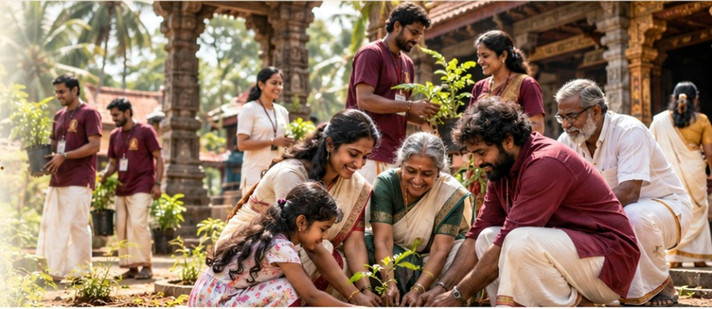
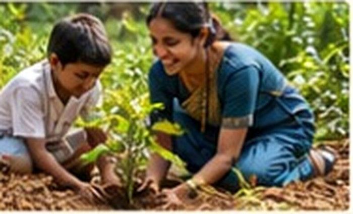
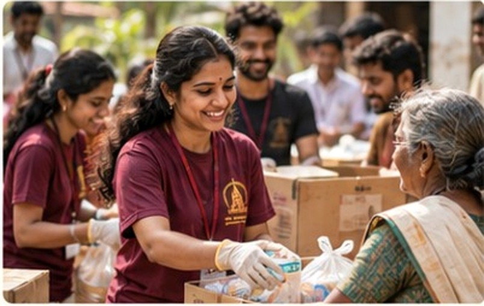
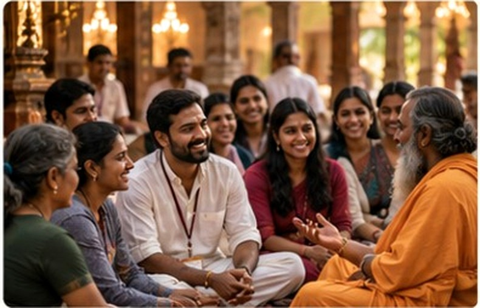
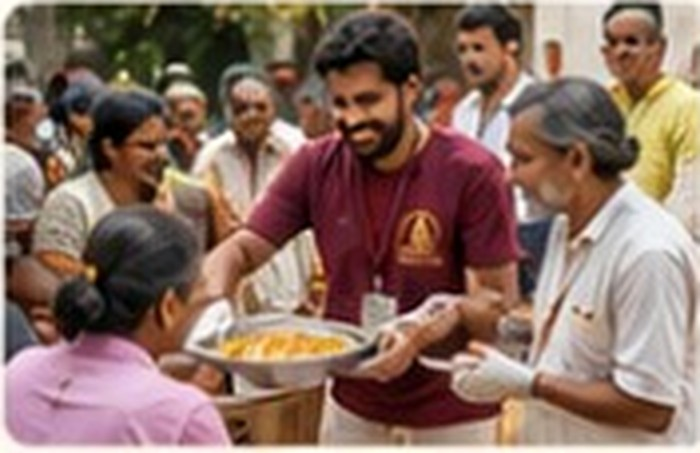

Satsang & Namajapa
Space for confirmed satsang, namajapa and spiritual-learning gatherings at ashrams, temples and homes.
Schedule to be announcedMedia & Events
Follow gatherings, service activities, spiritual programmes, cultural initiatives and community moments connected with Shri Kalika Peetham in Kerala.


Events
Official schedules can be published here as programmes are confirmed. The page is ready for dates, venues, registration links and event notices.
Space for confirmed satsang, namajapa and spiritual-learning gatherings at ashrams, temples and homes.
Schedule to be announcedSpace for temple service, sadhu seva, community support, cleanliness drives and volunteer initiatives.
Schedule to be announcedSpace for tree planting, conservation, sacred-grove care and heritage-preservation programmes.
Schedule to be announcedMedia Gallery
This V5 demo uses the existing visual set. Official Kalika Peetham event photographs and videos can replace these images without changing the layout.



Participate
Register as a member or volunteer to stay connected with future programmes and seva opportunities.